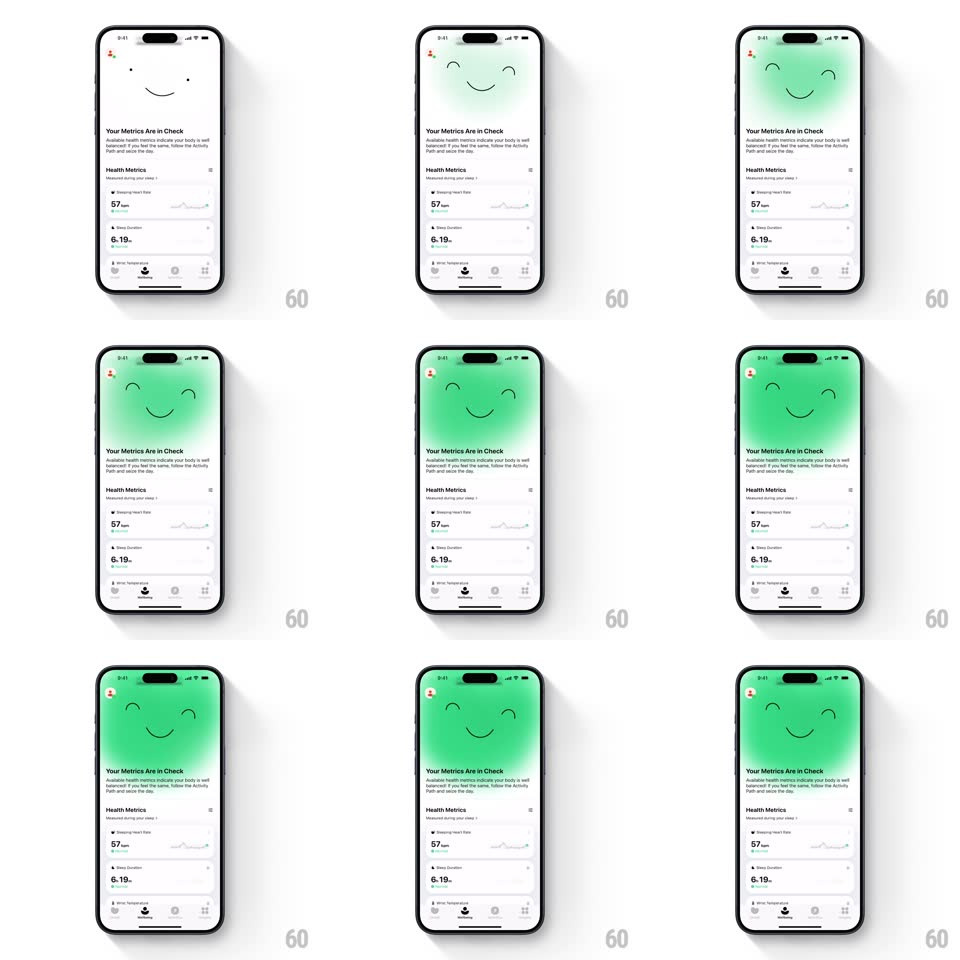

Media
Frame-by-frame

Rebuild this animation 1:1: Gentler Streak's wellbeing header - a green gradient blooms down from behind the mascot face while its closed-eyes smile wiggles, flooding the top of the metrics screen.

Rebuild this animation 1:1: Gentler Streak's wellbeing header - a green gradient blooms down from behind the mascot face while its closed-eyes smile wiggles, flooding the top of the metrics screen.
## Integration
Integration: stack-agnostic spec - springs given as stiffness/damping, timed motions as duration + curve; map every value to your framework and animation library of choice.
## Scene
The top of the wellbeing screen: a large mascot face (closed curved eyes, gentle smile - just two strokes and a curve) above "Your Metrics Are in Check" and the Health Metrics list. On entry (or status change to good), a vibrant green gradient sweeps in behind the face.
## Motion spec
Pattern: gradient bloom + mascot wiggle.
- Bloom: the green radial gradient expands from a point behind the mascot's crown (radius 0 to ~140% of header width, 900ms, ease-out), feathering into the white background at its edge; the face's strokes stay dark on top of the green.
- Wiggle: as the bloom passes 60%, the face does a happy wiggle - eyes squeeze (stroke arcs flatten, scaleY 0.7, 150ms) while the whole face tilts +-4deg twice (300ms) and the smile widens (arc radius +15%, 200ms), settling back with a soft spring (~420/22).
- Content below ("Your Metrics Are in Check" header, metric rows) staggers up underneath (translateY 14px, 250ms, 70ms apart) after the bloom starts.
- On status change to a worse state, the green drains back upward (600ms) and the face morphs to the concerned variant (mouth curve flattens) - the bloom is the status indicator.
## Calibration
- The gradient is radial and top-weighted; it must never become a full-bleed fill - the metrics area stays white.
- The wiggle happens once per bloom, not on a loop.
## Reduced motion
Gradient fades in statically; face swaps without wiggle.
## Don't miss
- The face is three strokes total - the charm is in their deformation, not in added features.
- Bloom origin sits behind the face center-top, so green reads as radiating from the mascot.